OligoC4b project · in-house spatial data plus sixteen public datasets · 2026-09-25
The question. When checking C4b in the spatial datasets, had we also looked at C5 and the C5 receptors, and at C1q and Cfb (complement factor B)?
The short answer. C4b⁺ oligodendrocytes do not express C5 or the C5a receptors themselves, in any of nineteen datasets across mouse and human, aging, AD, EAE, toxic demyelination and MS. The C5a receptor C5aR1 sits on microglia and infiltrating myeloid cells, and those cells are about twice as enriched within 30 µm of C4b-high oligodendrocytes in EAE, also after matching for lesion distance. Local C5 transcript is near-zero in mouse tissue and present only at low, non-responsive levels in human glia, so the C5/C5a arm has to be assessed at protein level. C1q is microglial and tracks C4b with age at tissue level. Cfb is induced only in active inflammatory demyelination (EAE, chronic active MS lesion microglia) and is silent in aging and amyloid models. The complement genes that do join the C4b⁺ oligodendrocyte program are C4a and the membrane regulators Cd59a and Cr1l/Crry, i.e. protection against complement deposition rather than complement receptors.
| Dataset | Platform | Design | Complement genes on the panel |
|---|---|---|---|
| Xenium mouse AD (TgCRND8 time course) | Xenium, 347 genes | wildtype vs TgCRND8, 2.5 / 5.7 / 13–18 months, one section each | C4b, C4a, C1qa, C1qb, C1qc, C3 |
| Xenium mouse EAE (RR and chronic) | Xenium 5K panel | 107 samples, EAE vs control, lesion-distance annotation | C4b, C3, C3ar1, Hc (C5), C5ar1, C5ar2, Cfb, C6, Cr1l, Cd55, Cd59a |
| Visium aging mouse brain | Visium | young / mid / old, 6 sections | whole transcriptome |
| Falcão et al. 2018 EAE scRNA-seq (Smart-seq2) | sorted single cells | oligodendrocyte lineage + microglia, control vs EAE | whole transcriptome |
Note that mouse C5 is annotated as Hc. It is on the 5K panel but not on the 347-gene AD panel, so C5, C5aR1/2 and Cfb cannot be assessed in the Xenium AD data at all.
| Dataset | Accession | Species, modality | Comparison |
|---|---|---|---|
| Park 2023, AD hippocampus | GSE224398 | mouse scRNA-seq | App^NL-G-F^ vs control, 1/3/6 mo |
| Aging snRNA-seq, hippocampus + caudate putamen | GSE212576 | mouse snRNA-seq | old vs young |
| Ximerakis 2019, whole brain | GSE129788 | mouse scRNA-seq | old vs young |
| Kaya 2022, aged white vs grey matter | GSE202579 | mouse scRNA-seq | WM vs GM at 24 mo, WT and Rag1-KO |
| Zhou 2020, 5XFAD | GSE140511 | mouse snRNA-seq | 5XFAD vs non-Tg, 7 and 15 mo, ± Trem2-KO |
| Chen 2020, Spatial Transcriptomics | GSE152506 | mouse ST | App^NL-G-F^ vs WT, 3–18 mo |
| LPC + cuprizone corpus callosum | GSE293850 | mouse snRNA-seq | LPC / cuprizone vs controls |
| Serpina3n-cKO + cuprizone | GSE319903 | mouse snRNA-seq | cuprizone vs normal diet, ± Serpina3n cKO |
| Jäkel 2019, MS white matter | GSE118257 | human snRNA-seq | lesion types vs control |
| Absinta 2021, chronic active MS | GSE180759 | human snRNA-seq | lesion edge / core / periplaque vs control |
| Schirmer 2019, MS lesions | UCSC Cell Browser | human snRNA-seq | lesion types vs control |
| Lerma-Martin 2024, subcortical MS lesions | GSE279180 / GSE279181 | human snRNA-seq + Visium | chronic active / inactive vs control |
| Senescent-like glia in MS, 2025 | GSE277435 | human Visium | MS subtypes (no controls) |
| Leng 2021, SFG + entorhinal cortex | GSE147528 | human snRNA-seq | Braak 6 vs Braak 0 |
| Sadick 2022, PFC astrocyte/oligodendrocyte-enriched | GSE167494 | human snRNA-seq | AD vs non-symptomatic |
About one million cells and nuclei in total. All public data were processed with one pipeline (QC, normalisation, clustering) and given a shared ten-level cell-type label. Author annotations were used where deposited; otherwise clusters were annotated from marker-gene scores. Oligodendrocyte and microglia labels, the only ones the analyses rely on, were validated against Plp1 (96–100 %) and Hexb (92–100 %) in every mouse dataset. Details are in docs/cell_type_annotation.md in the repository.
Xenium is targeted, so panel content is the first result. Beyond that, one technical finding applies to all human data: human C4A and C4B cannot be quantified from standard Cell Ranger / Space Ranger output. The two paralogs are near-identical, multi-mapping reads are discarded, and every human dataset ends up with 5–470 UMIs for C4A + C4B in 17–107 k nuclei (compared with 10⁵–10⁶ for PLP1). Human C4 therefore needs a multi-mapping-aware re-quantification from reads before anything can be said about it.
| Gene | Xenium AD | Xenium EAE | Visium / all public mouse data | Public human data |
|---|---|---|---|---|
| C4b | ✓ | ✓ | ✓ | not quantifiable (paralogs) |
| C1qa / C1qb / C1qc | ✓ | ✗ | ✓ | ✓ |
| C3, C3ar1 | C3 only | ✓ | ✓ | ✓ |
| C5 (Hc) | ✗ | ✓ | ✓ | ✓ |
| C5ar1 / C5ar2 | ✗ | ✓ | ✓ | ✓ |
| Cfb | ✗ | ✓ | ✓ | ✓ |
C4b in oligodendrocytes rises with age in every aging dataset (pseudobulk log2 fold change about 2–3, significant in the aging snRNA-seq and Ximerakis sets), is far higher in aged white than grey matter (77 % of aged white-matter oligodendrocytes are C4b⁺ in Kaya 2022), is up about 2.8 log2 in 5XFAD oligodendrocytes, and rises with toxic demyelination (8 % of oligodendrocyte nuclei in controls, 16 % after cuprizone, 34 % after LPC). In the Chen spatial AD data its correlates across spots are the plaque-induced and DAM genes (C4a, Cst7, Gfap, Tyrobp, Trem2, Apoe, C1qa–c, Serpina3n). Inside oligodendrocytes, Serpina3n is the top C4b-correlated gene in every dataset with a clean C4b⁺ population, followed by the MHC-I / interferon module (H2-D1, B2m, H2-K1, Ifi27, Irf9, Stat3), Klk6, Apod, Trf, Cd9 and Cldn11: the same program as in the in-house data.
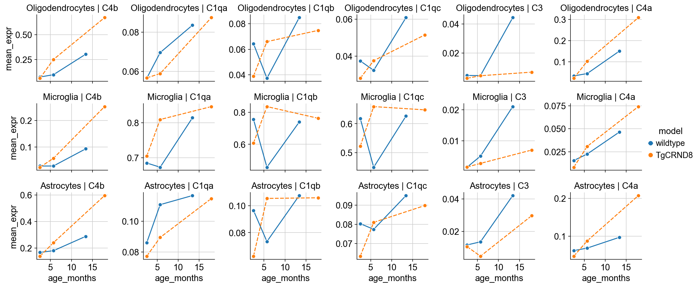
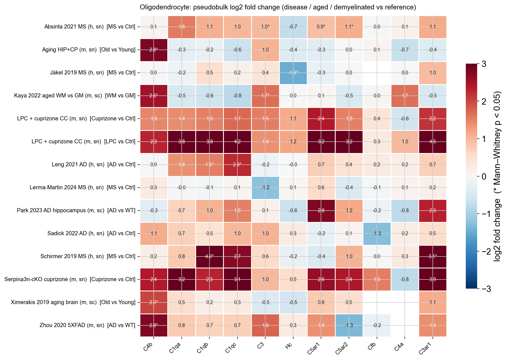
Mouse: C5 transcript is detected in at most 0.5 % of cells of any type in Xenium EAE, at most 0.3 % in all eight mouse single-cell datasets and about 1–2 % of Visium / ST spots, with no disease, age or demyelination change. Human: a low glial C5 transcript is present in every human dataset (2–11 % of oligodendrocytes, 4–17 % of astrocytes and OPCs), unchanged across Braak stages and unchanged or slightly lower in MS lesions. C5 is plasma-derived; if C5a signalling matters here it has to be measured as protein (C5a, C5b-9 deposition), not as RNA.
C5aR1 is myeloid in all nineteen datasets: 20–45 % of microglia, macrophages and infiltrating myeloid cells in EAE, 6–38 % of mouse microglia in the public data (highest in aged white matter), 3–17 % of human microglia nuclei, and at most 1 % of oligodendrocytes anywhere, including C4b⁺ disease-associated oligodendrocytes. Sorted single cells (Falcão) confirm this is not spatial spill-over: 14 of 700 C4b⁺ mature oligodendrocytes co-detect C5ar1. C5aR2 follows the same pattern at lower levels.
Per-cell C5ar1 in myeloid cells is flat from lesion core to > 500 µm in EAE, so the 3-fold tissue-level gradient toward lesions is recruitment of C5aR1⁺ cells, not receptor up-regulation. In human MS, microglial C5AR1 peaks at chronic active lesion edges (Absinta 14.5 % vs 4.5 % in control white matter; Lerma-Martin 25 % vs 8 %) and the matched Lerma-Martin Visium shows 8.5-fold higher C5AR1 in chronic active lesion spots than in control white matter.
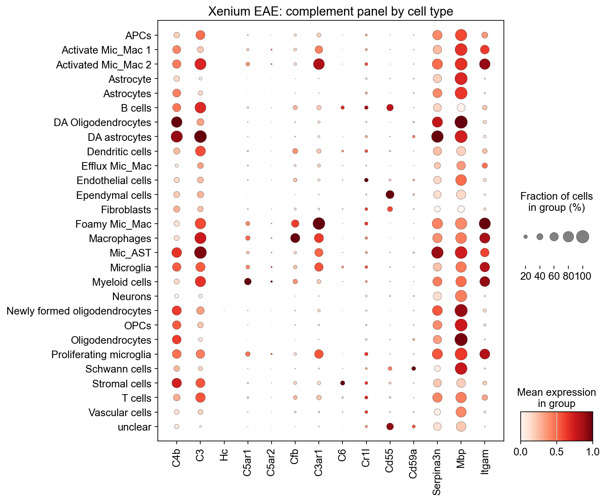
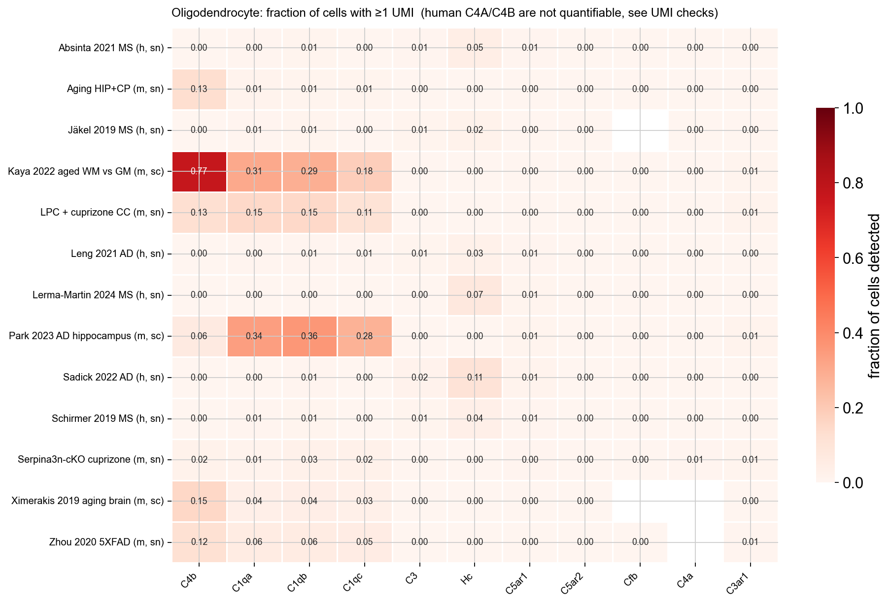
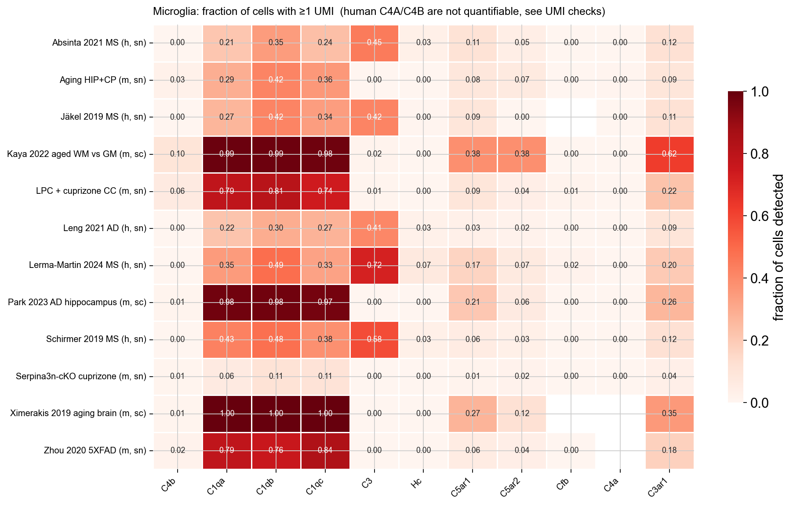
Spatial relationship to C4b⁺ oligodendrocytes. In 87 EAE samples, C5aR1⁺ cells are enriched within 30 µm of C4b-high oligodendrocytes relative to C4b-negative oligodendrocytes (median ratio 2.2, paired Wilcoxon p ≈ 4×10⁻⁷; 2.0 for C5aR1⁺ myeloid cells; 1.5 for C5aR2⁺; 1.7 for Cfb⁺; 1.8 for C3aR1⁺). This is not just lesion proximity: stratifying source oligodendrocytes by lesion distance gives a median ratio of 1.96 (76 samples, 84 % above 1), and restricting to non-lesion tissue gives 2.2. Within 50–200 µm of a lesion the ratio is about 1, because everything there is myeloid-dense; at 200–500 µm and beyond it is 1.7–2.3, so away from lesions C4b-high oligodendrocytes mark myeloid-rich micro-niches.
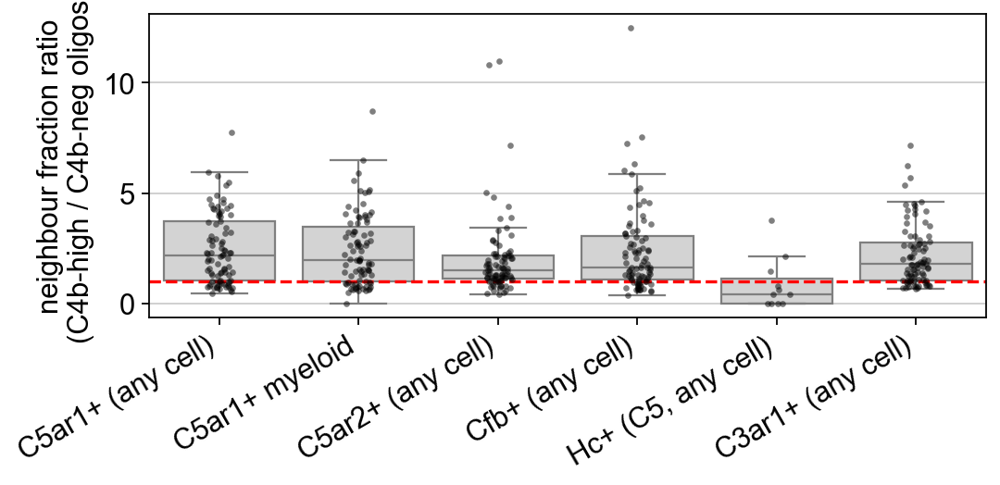
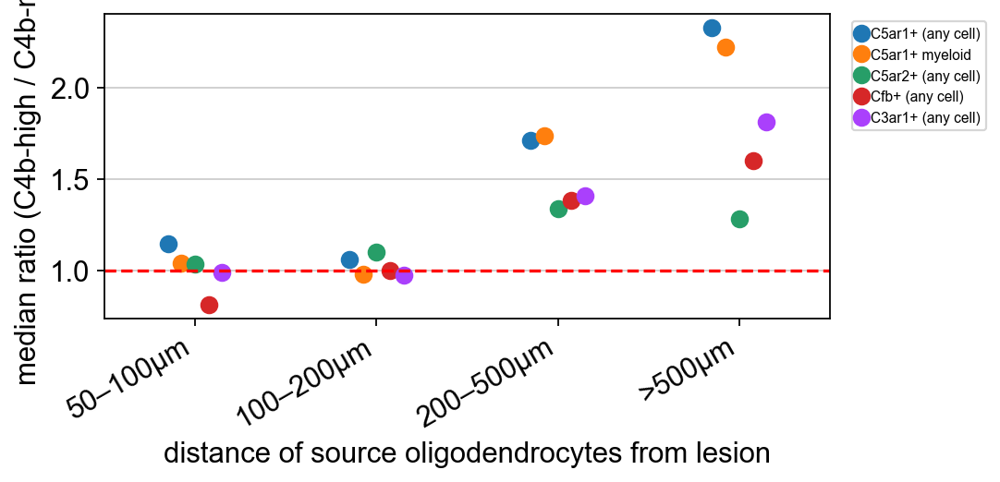
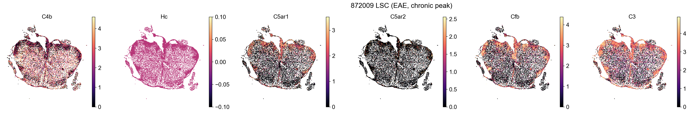
C1q is microglial in every dataset (76–100 % of mouse microglia, 21–62 % of human microglia nuclei, higher in MS lesions than control white matter). In the Visium aging data all three C1q genes rise with age in parallel with C4b and rank among the top 50 of 16,000 genes correlated with C4b in white-matter spots; in the Chen spatial AD data they rank 11–18 of about 14,000. Inside oligodendrocyte nuclei the coupling is weak (rank 233–482 in 5XFAD, beyond 2,800 in aging). In the Xenium AD sections, C1q⁺ microglia are enriched around C4b-high oligodendrocytes only in the two oldest sections, whereas C3⁺ astrocytes are about 3-fold enriched in every section. Nuclei from active demyelinating lesions (LPC, cuprizone) carry microglial ambient RNA, so C1q, Apoe and Ctsd co-varying with C4b in those "oligodendrocytes" should not be read as intrinsic expression.
Cfb is a lesion-associated myeloid gene. In EAE it is detected in 67 % of lesion macrophages and 50 % of foamy myeloid cells, is induced about 10-fold in EAE microglia (pseudobulk 0.04 → 0.44, p < 10⁻⁴), and shows a steep gradient toward lesions. In the sorted Falcão data it is the one panel gene with a modest intrinsic oligodendrocyte component: detected in 13 % of EAE-cluster mature oligodendrocytes versus 2 % of controls, about 5-fold enriched in C4b⁺ cells. Everywhere else it is silent: at most 0.2 % of microglia and 0.1 % of oligodendrocytes in every AD and aging dataset, 0.4 % of Visium spots, and in human MS only chronic-active-lesion microglia show it (2.8 % vs 0.8 %). Cfb therefore marks active inflammatory demyelination rather than the age- or amyloid-associated C4b⁺ state.
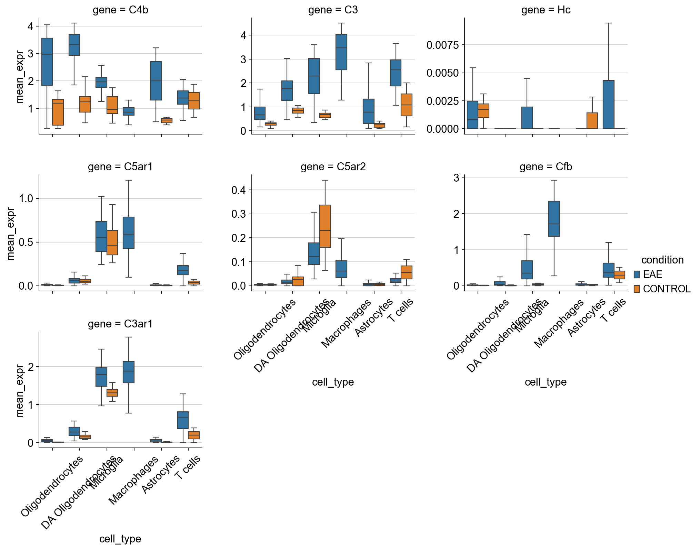
Ranking every gene by its correlation with C4b inside oligodendrocytes, no complement receptor, Cfb or C5 reaches the top 1,000 in any dataset. The complement genes that do are C4a (rank 1 in the spatial AD data, 4-fold detection enrichment in aged white matter) and the membrane regulators Cd59a (ranks 117–740) and Cr1l/Crry (ranks about 1,100–1,250). C4b⁺ oligodendrocytes up-regulate protection against complement deposition, not complement receptors.
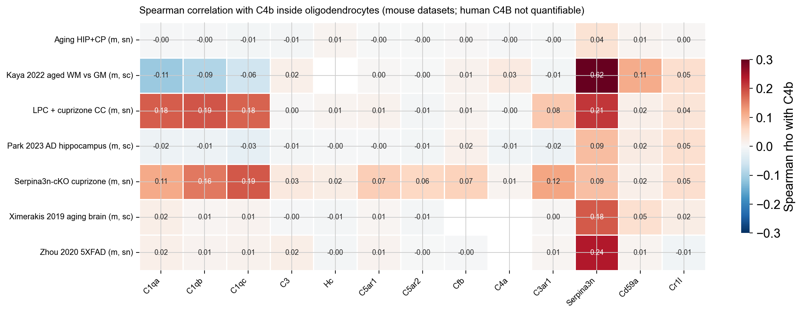
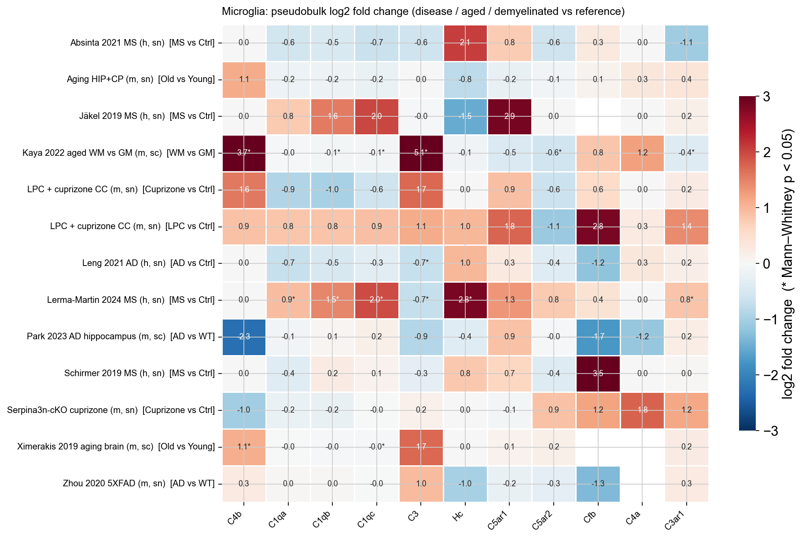
Section pending: the integrated atlas is being computed (scVI/scANVI over ~190,000 oligodendrocytes from twelve datasets) and will be added when finished.
Repository OligoC4b (GitHub, christoffermattssonlangseth/OligoC4b): executed notebooks with code and outputs under notebooks/analysis/ (analysis_spatial_complement_C5_C1q_Cfb, analysis_public_datasets_complement, analysis_oligodendrocyte_atlas), the dataset loaders in scripts/oligoc4b_public.py, and plain-language documentation in docs/ (complement_findings.md, public_datasets.md, cell_type_annotation.md, notebooks.md). Raw and processed data are on the group's analysis machine under /Volumes/jamboree/OligoC4b_public/.